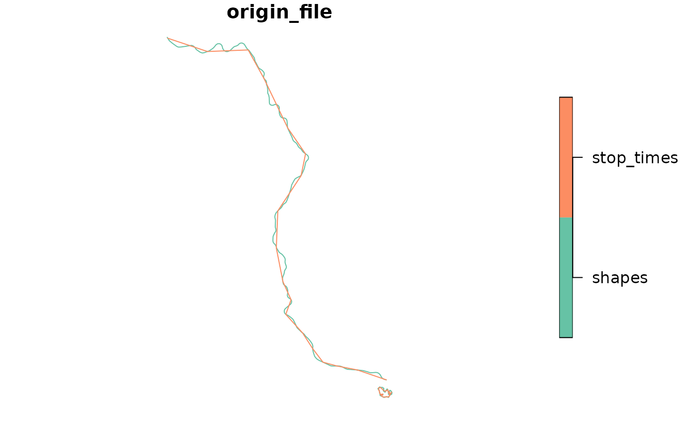

Returns the geometry of each specified trip_id, based either on the
shapes or the stop_times file (or both).
get_trip_geometry( gtfs, trip_id = NULL, file = c("shapes", "stop_times"), crs = 4326 )
| gtfs | A GTFS object as created by |
|---|---|
| trip_id | A string vector including the |
| file | The file from which geometries should be generated. By default
uses both |
| crs | The CRS of the resulting object. Defaults to 4326 (WGS 84). |
A LINESTRING sf.
The geometry generation works differently for the two files. In the case of
shapes, the shape as described in the text file is converted to an
sf object. For stop_times the geometry is the result of linking
subsequent stops along a straight line (stops' coordinates are retrieved from
the stops file). Thus, the resolution of the geometry when generated
with shapes tends to be much higher than when created with
stop_times.
data_path <- system.file("extdata/spo_gtfs.zip", package = "gtfstools") gtfs <- read_gtfs(data_path) trip_geometry <- get_trip_geometry(gtfs) head(trip_geometry)#> Simple feature collection with 6 features and 2 fields #> Geometry type: LINESTRING #> Dimension: XY #> Bounding box: xmin: -46.98404 ymin: -23.73644 xmax: -46.63535 ymax: -23.19474 #> CRS: EPSG:4326 #> trip_id origin_file geometry #> 1 CPTM L07-0 shapes LINESTRING (-46.63535 -23.5... #> 2 CPTM L07-1 shapes LINESTRING (-46.87255 -23.1... #> 3 CPTM L08-0 shapes LINESTRING (-46.64073 -23.5... #> 4 CPTM L08-1 shapes LINESTRING (-46.98404 -23.5... #> 5 CPTM L09-0 shapes LINESTRING (-46.77604 -23.5... #> 6 CPTM L09-1 shapes LINESTRING (-46.69711 -23.7...trip_ids <- c("CPTM L07-0", "2002-10-0") trip_geometry <- get_trip_geometry(gtfs, trip_id = trip_ids) trip_geometry#> Simple feature collection with 4 features and 2 fields #> Geometry type: LINESTRING #> Dimension: XY #> Bounding box: xmin: -46.87255 ymin: -23.55262 xmax: -46.62922 ymax: -23.19474 #> CRS: EPSG:4326 #> trip_id origin_file geometry #> 1 CPTM L07-0 shapes LINESTRING (-46.63535 -23.5... #> 2 2002-10-0 shapes LINESTRING (-46.62963 -23.5... #> 3 2002-10-0 stop_times LINESTRING (-46.62962 -23.5... #> 4 CPTM L07-0 stop_times LINESTRING (-46.63544 -23.5...